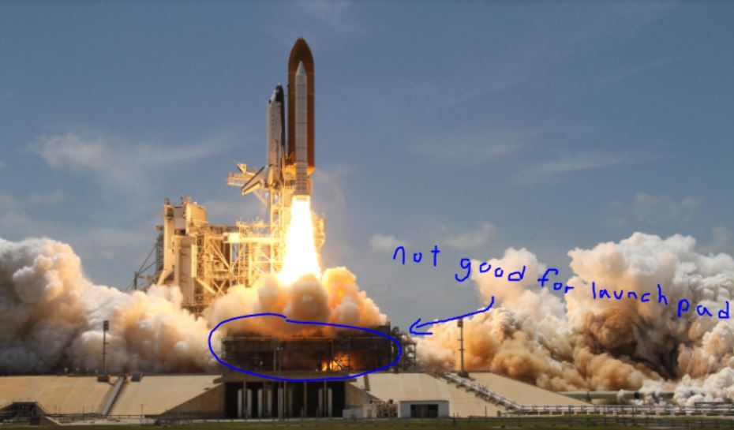
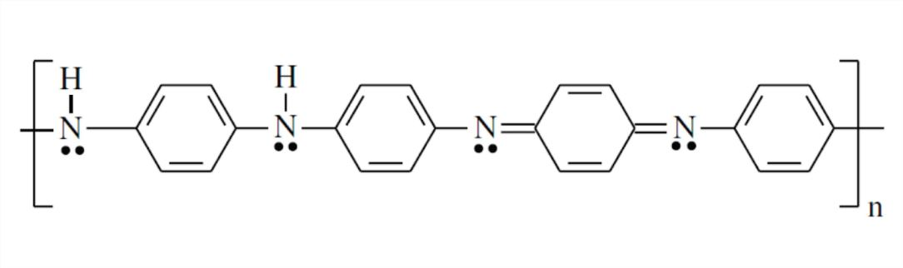
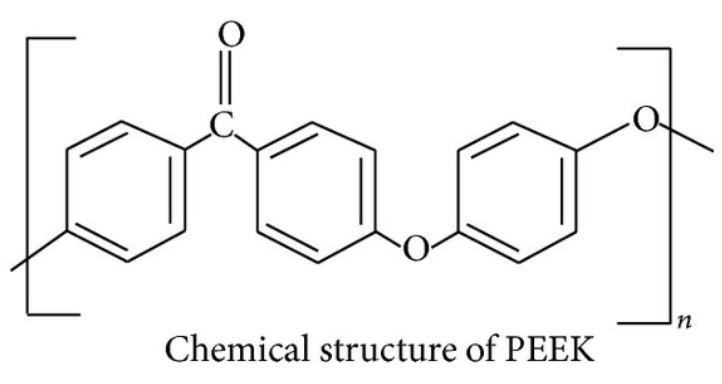
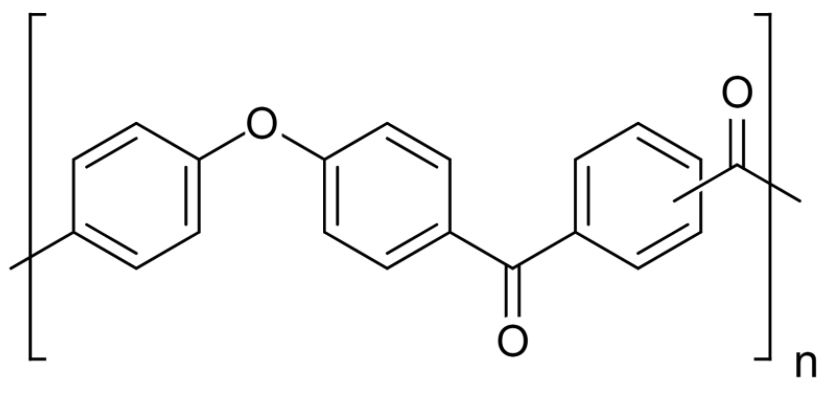

The Space Shuttle
With the launch of space shuttle Columbia on the 12th of April 1981, a new era of
space exploration began. Thanks to the countless hours put in across various industries, humanity finally had a
reliable method to access the stars. No sooner had Columbia returned than preparations for its next flight (STS-2)
began. However the team at NASA soon faced an issue that could potentially bring the program to a halt.
Located in Cape Canaveral Florida, the Kennedy Space Center and the shuttle launch pad
itself was no stranger to the salty floridian air. However under prolonged exposure to these conditions, it was
found that the launch pad soon began to rust. Rusting of iron is a redox reaction in which Fe2+ is
oxidized by atmosphere oxygen to form Fe3+.
4Fe(s) + 3O2(g) → 2Fe2O3(s)
Not only does rust look bad on
the otherwise metallic looking structure, it poses a serious problem to the structural integrity of the launch
pad. It was also found that the exhaust fumes generated by the booster rockets on takeoff produced hydrochloric
acid; a very acidic substance that can easily corrode metal. Not so fun fact for NASA: A cubic centimeter of iron
can produce 3 cubic centimeters of rust.

In order to prevent the structural deterioration of the launch pad, NASA
had to repaint the surface of the launch pad in a protective coating after every launch. Unfortunately, both air
and moisture could permeate through the paint, so their solution would only be a temporary one.
Enter Polyaniline (C6H5NH-), an organic polymer discovered in
the early 1860’s that was found to have surprising capabilities in the fight against rust. In collaboration with the
Los Alamos National Laboratory, it was discovered that the launch pad could be coated with polyaniline in order to prevent the
rapid rusting and corrosion caused by Florida’s climate in conjunction with the space flights.

An experiment was conducted in which identical samples of iron were placed in a diluted solution of
hydrochloric acid. One was coated with the polymer, whilst the other was left untouched. After 4 weeks, the uncoated block began
to show signs of rusting while the coated block remained rust free. The experiment was successfully concluded after 25 weeks after
which the uncoated block was shown to have heavily rusted, while the coated block remained in its original state. NASA’s subsequent
use of polyaniline coating is estimated to have saved over $250 000 a year in maintenance costs for various equipment and structures.
The Aerospace Industry
As one of the leading consumers of high grade materials, the aerospace industry has benefited from the introduction
of polymers and various composite materials. These materials often provide the structural rigidity required at a fraction of the mass of
traditional materials. Their high development costs are made cheaper by the discovery of new manufacturing methods as well as mass
production in general. Furthermore, the weight reduction means an increase in fuel efficiency as well as serviceable range, further
offsetting the initial cost of development. Many of these materials have not only trickled up into aeronautical engineering, but also
trickled down into more everyday products.

Polyaryletherketones are a group of semi-crystalline
thermoplastics (organic polymers) made from Phenylene (C6H4) rings with a molecular backbone consisting of an
alternating pattern of ketone (R-C=O-R) and ether (R-O-R) groups (oxy).
Consequently, polyaryletherketones possess many properties that make them ideal for the aerospace
industry such as: being lightweight, being resistant to corrosion, being able to withstand extreme temperatures, and most of all; being durable.
For this reason, two of their decedent polymers have found widespread success in the aerospace industry.
Polyetheretherketone, or PEEK, is one of the most readily found polymers in the aerospace industry. In addition to
all of the aforementioned properties, it further possesses:
- Low Flammability
- Resistance to Creep (deformation over time)
- Resistance to Radiation
- Resistance to Hydrolysis
Polyetheretherketone can be found in pump gears, valve seats, flight control, fuel systems, interiors, and engines among numerous other uses.

In a similar manner to polyetheretherketone, polyetherketoneketone or, PEKK, possesses countless attributes that make it
perfect for applications in aerospace. Like its more popular cousin, PEKK is also a semi crystalline thermoplastic derived from the organic
polyaryletherketones family. Like PEEK, it carries with it many of the same attributes, along with a couple others such as:
- High Heat Resistance
- High Chemical Resistance
- Sturdy, yet Flexible (reportedly as strong as aluminum at
only 40% of its mass)
- High Load Tolerance

PEKK does have a unique attribute in its ability to be able to be manufactured in an additive process. Unlike traditional materials, PEKK can be built
layer by layer instead of molded or block cut. What results is a process very similar to 3d printing, but of much higher quality.
PEKK can be found throughout rockets and spacecraft in particular. Since 2010, PEKK has been used by Boeing in its Starliner program.